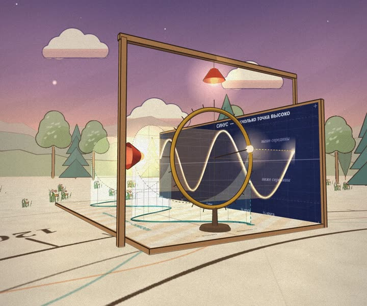
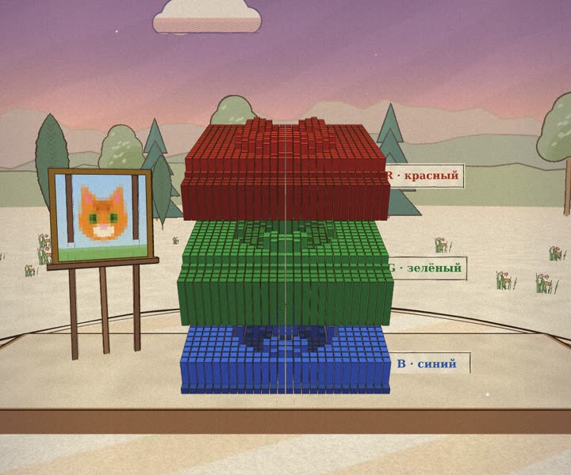
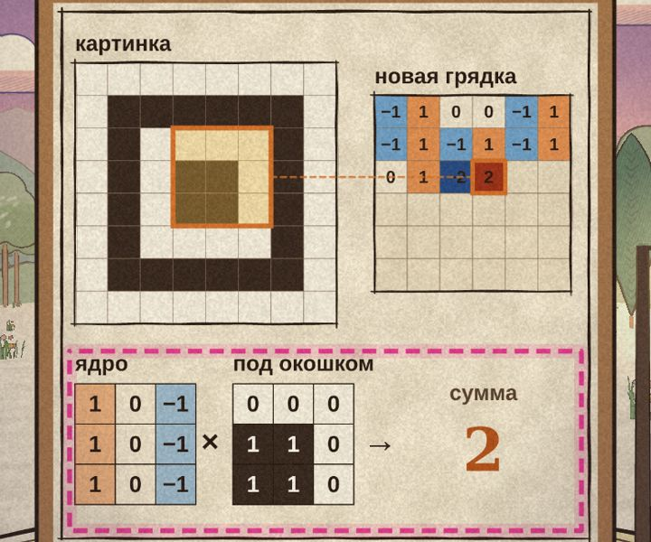

Мне всегда было мало формул, хотелось увидеть, как оно устроено, в пространстве. Попросил Claude Code, и получились сады. Открываются прямо в браузере, с телефона тоже. Дальше хочу в VR.

Синус и косинус как тени бегущей точки, площадь под холмом, вода, которая набирается в баке. Четыре станции.
Войти в сад →
Как нейросеть видит картинку: кот распадается на три таблицы чисел, окошко ищет края, слой за слоем всё сжимается в вектор и в ответ.
Войти в сад →
Тринадцать станков подряд, от одного нейрона до внимания и генерации текста. На каждом урок по шагам и ручки, которые можно крутить. Можно спросить Прохора голосом.
Войти в сад →Напишите мне. Самое интересное построю следующим садом.
Написать ВКонтакте